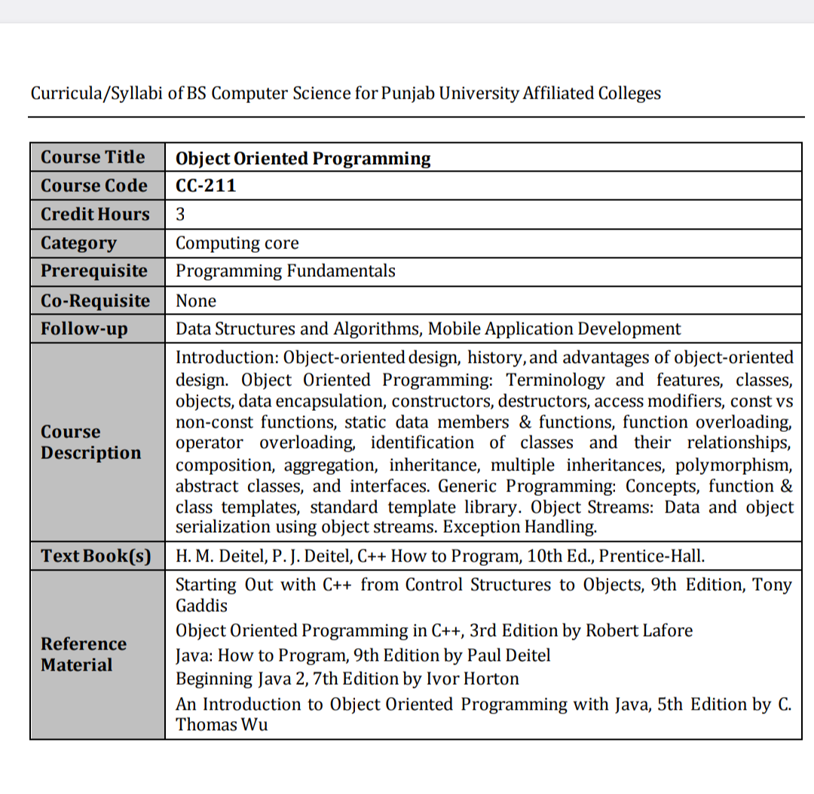
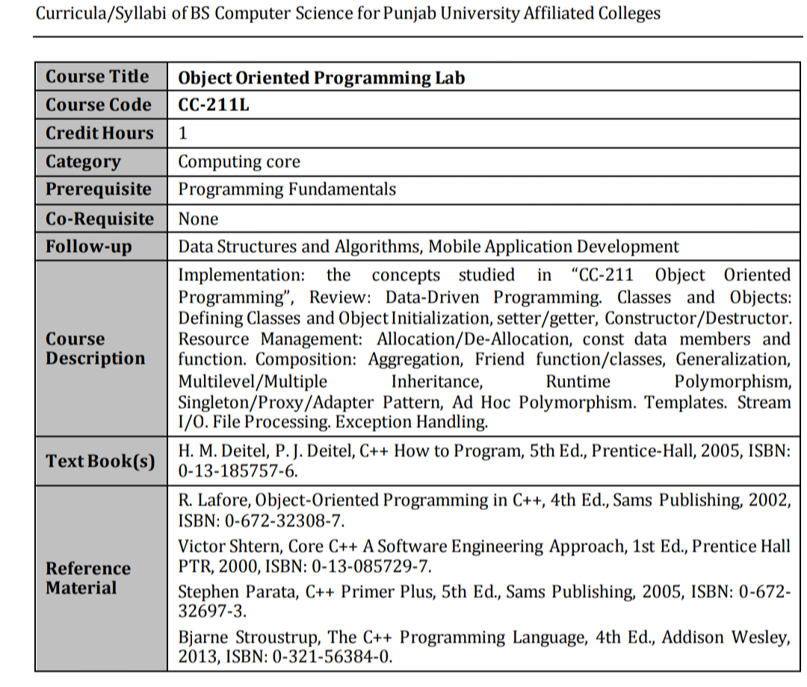
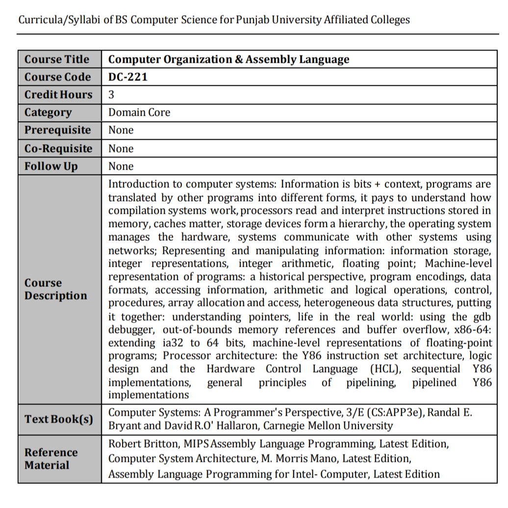
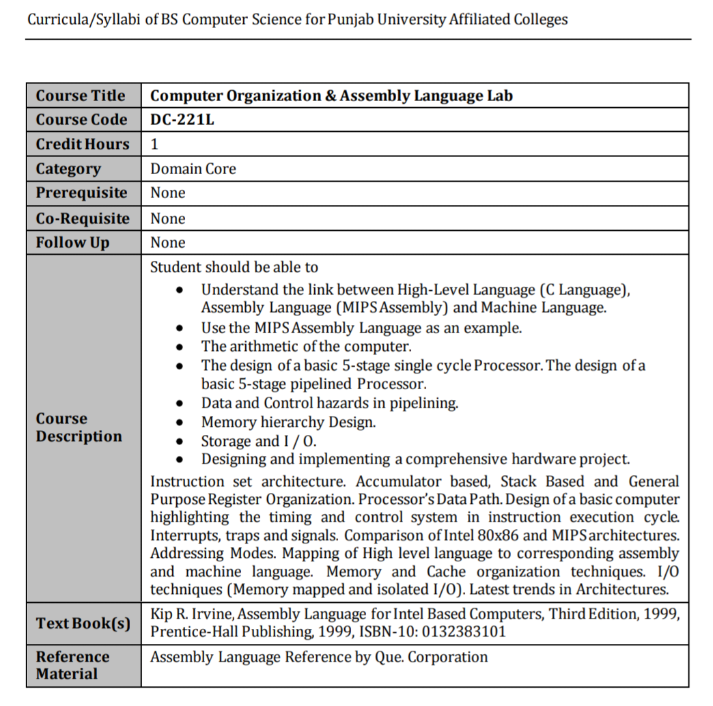
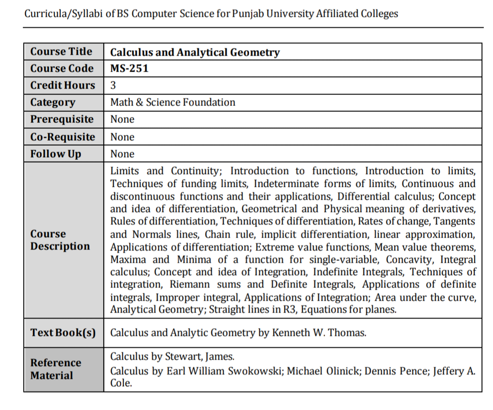
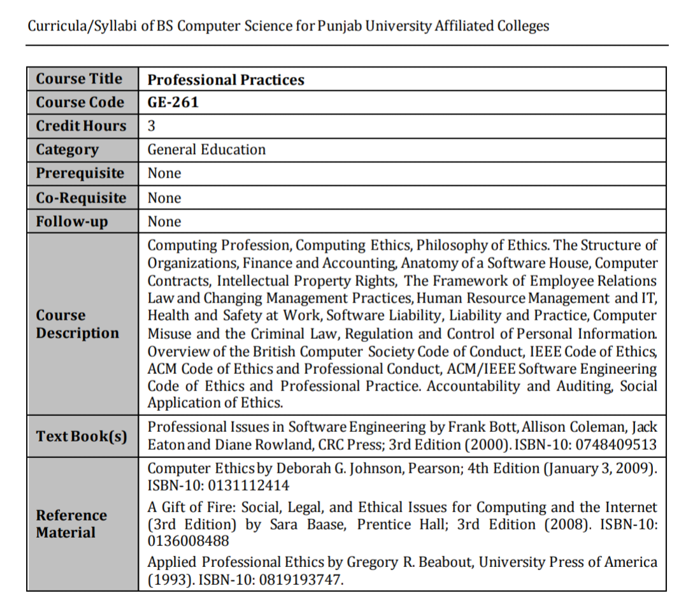
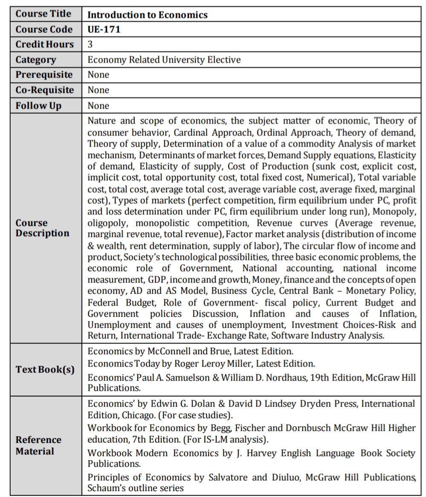

Official Course Outlines & Syllabus
Explore the complete, official Punjab University (PU) syllabus breakdown for 3rd-semester BSCS students enrolled in affiliated colleges. Review the detailed curriculum topics below to prepare for your theory and lab exams.
Object Oriented Programming (CC-211)
The Object Oriented Programming (CC-211) course outline introduces the fundamental concepts of OOP using C++. The curriculum covers core principles including classes, objects, encapsulation, inheritance, polymorphism, and abstraction. The lab portion focuses on practical implementations of these concepts in real-world programming scenarios.
Theory Outline

Lab Outline

Comp. Organization & Assembly (DC-221)
The Computer Organization and Assembly Language (DC-221) syllabus bridges the gap between software and hardware. The course outline dives into microprocessor architecture, instruction set architectures (ISA), memory management, memory hierarchy, and low-level assembly language programming (usually x86 architecture).
Theory Outline

Lab Outline

Calculus & Analytic Geometry (MS-251)
The Calculus and Analytic Geometry (MS-251) course outline focuses on advanced mathematical foundations necessary for computer science algorithms and analysis. Key topics include limits, continuity, derivatives, integrals, and their applications, alongside conic sections and vectors in two and three dimensions.

Professional Practices (GE-261)
The Professional Practices (GE-261) syllabus prepares students for the IT industry workplace. The curriculum discusses professional ethics, cyber laws, intellectual property rights, effective communication, and the social impact of computing technologies within Pakistan and globally.

Introduction to Economics (UE-171)
The Introduction to Economics (UE-171) course outline provides BSCS students with a foundational understanding of microeconomics and macroeconomics. Topics include supply and demand, market structures, national income accounting, and the economic principles that drive technology businesses.
